Роторы
Для создания камер сгорания двигателя применяются установленные соосно роторы - входной и выходной. Роторы так названы по расположению относительно входного окна и сопла. В двигателе отсутствуют лопатки турбины (в горячей части). Энергия для привода компрессора (и вентилятора) отбирается за счет расширения газов в камерах сгорания переменного объема образованных лопастями роторов. Общая компоновка двигателя представлена на картинке.
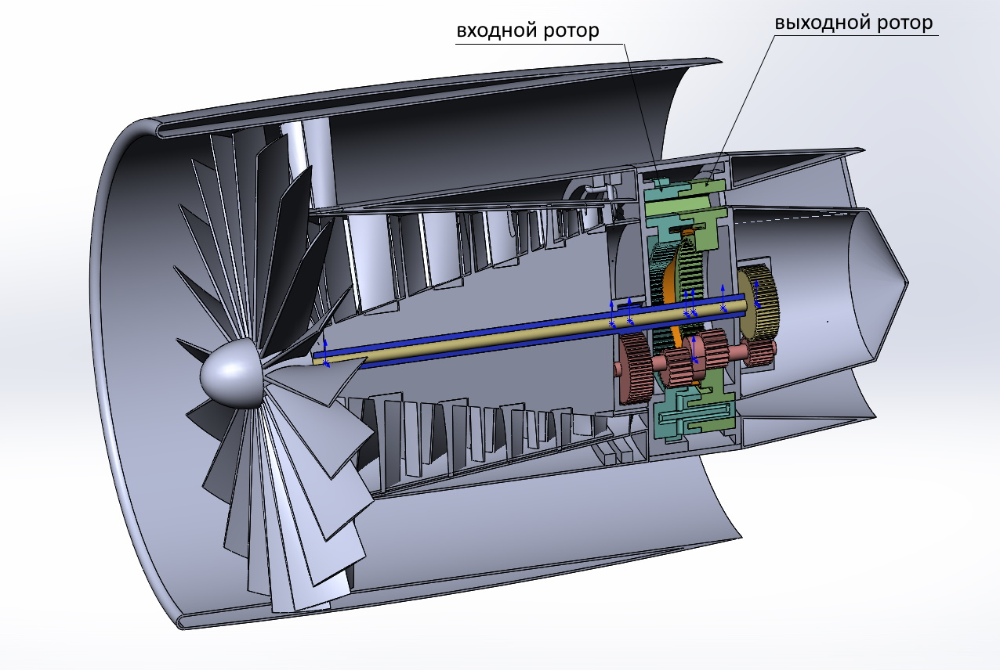
Тут представлена двухконтурная схема с осевым компрессором. Холодная часть двигателя (компрессор и вентилятор) не отличается от обычного двухконтурного двигателя. Хотя двигатель может быть и одноконтурным. В качестве компрессора может быть использован и центробежный компрессор. Различие состоит в том как сделана горячая часть и привод компрессора холодной части. Камеры сгорания переменного объема образованы двумя роторами устаовленными в корпус.
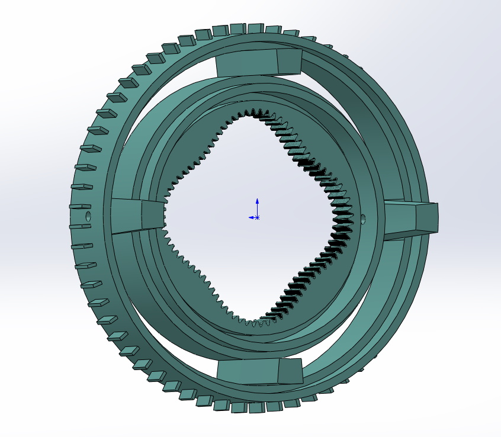
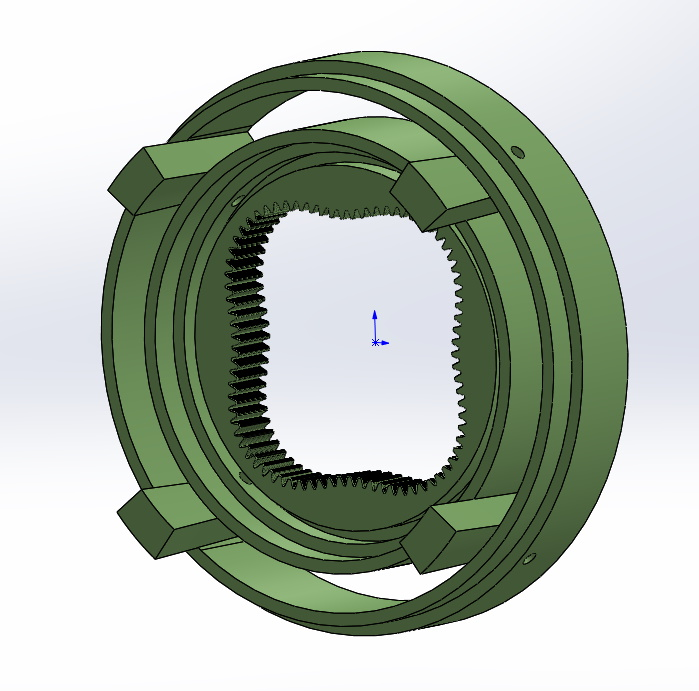
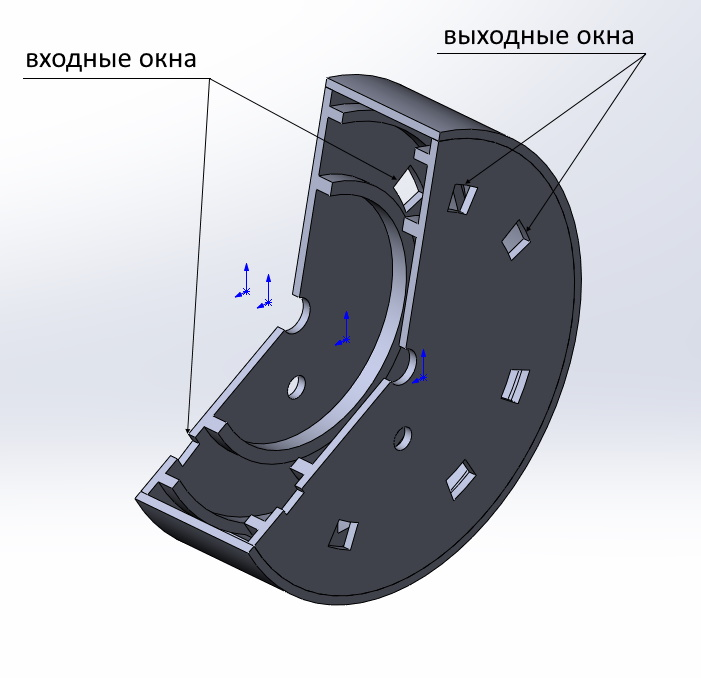
Передача
Основой зубчатой передачи является зубчатый вал со смещенными шестернями (ЗКВ).
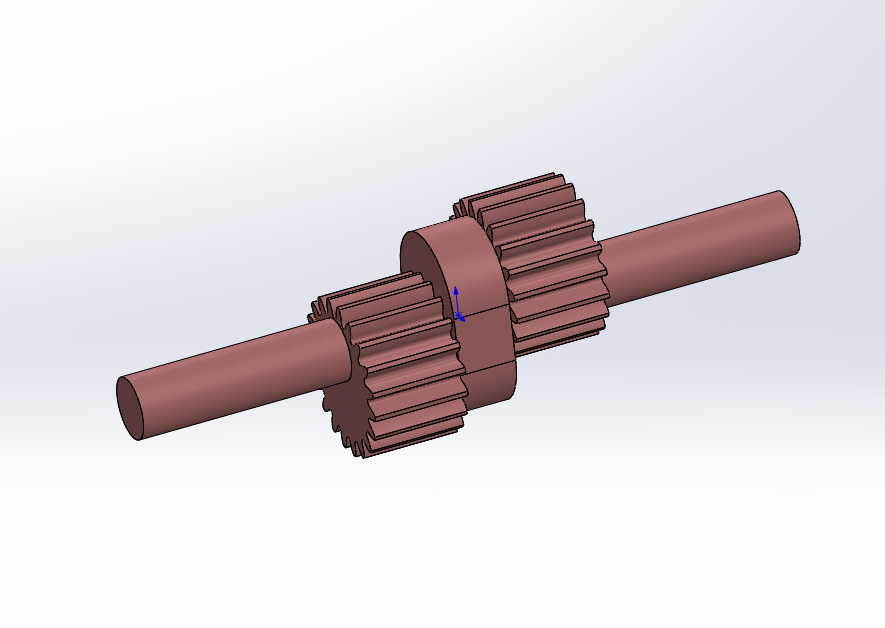
В приведенном примере используется передача с внутренним зацеплением. На роторах установлены зубчатые венцы входящие в зацепление с ЗКВ. Особенностью передачи применяемой для двигателя является то, что количестко оборотов ЗКВ за которое ротор проходит один оборот должно быть четным (в приведенном примере 4). В этом случае лопасти начинают малый ход и заканчивают большой ход в одной и той же точке. Это позволяет таким образом расположить входные и выходные окна, что лопасти закрывают их своими торцами в момент равных угловых скоростей роторов.
Газораспределение и цикл
Лопасти образуют камеры сгорания и продувочные камеры. У камер сгорания есть входные окна. У продувочных камер есть только выходное окно. В периоды когда в камере происходит сгорание топлива и её объем увеличивается камера работает как камера сгорания. В периоды когда камера уменьшает объем и остатки продуктов сгорания из неё вытесняются камера работает как камера продувки. Цикл двигателя выглядит следующим образом (представим что двигатель уже запущен и работает):
1. Компрессор создает давление перед входными окнами. Лопасти перекрывают торцами все окна (и входные и выходные). Камеры сгорания имеют наименьший объем в этом положении, а продувочные камеры наибольший.
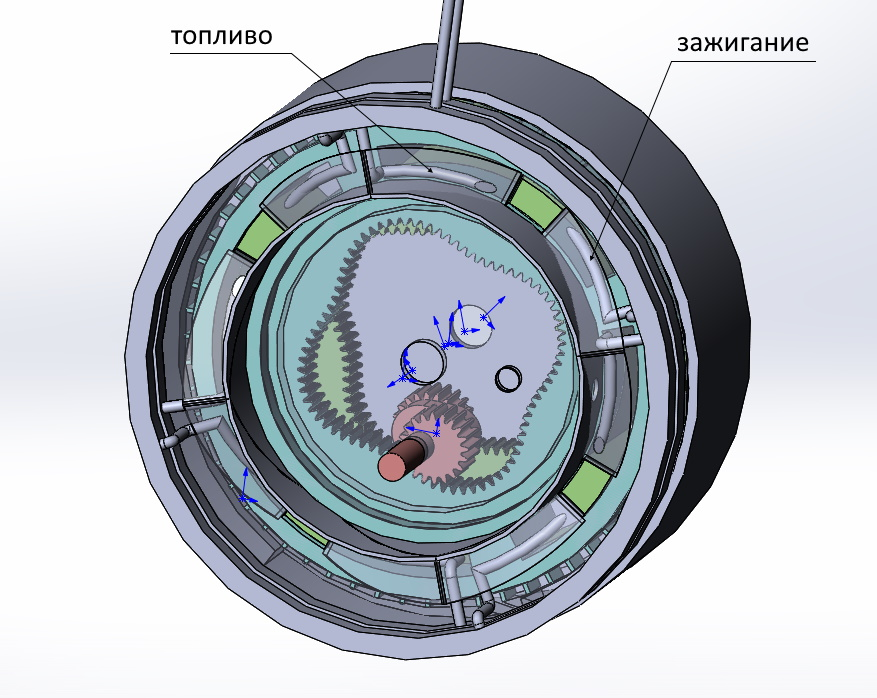
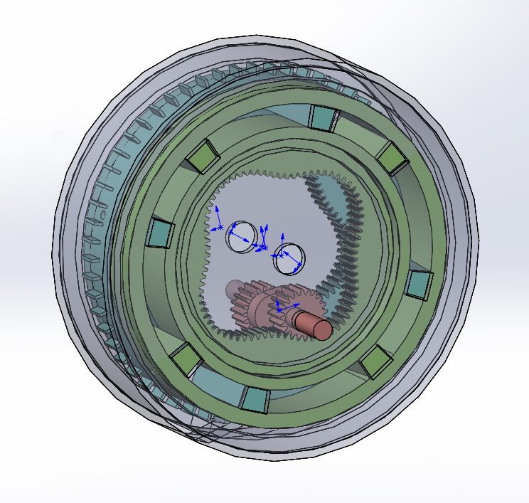
2. Когда роторы проворачиваются, открываются входные и выходные окна. Создается воздушный поток. В образовавшийся воздушный поток подается топливо. Полученная таким образом горючая смесь попадает в камеру сгорания. Устройства поджига зажигают горючую смесь. В результате сгорания топлива давление и температура в камерах сгорания возрастают. Давление продуктов сгорания создает реактивную струю которая начинает истекать через выходные окна в сопла. Процесс аналогичен сгоранию топлива в стационарных камерах сгорания реактивных двигателей. При этом давление оказывается и на лопасти роторов. Это приводит к расширеню камер сгорания с проворачиванием роторов.
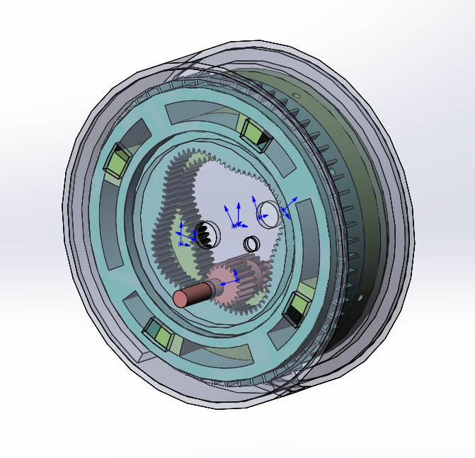
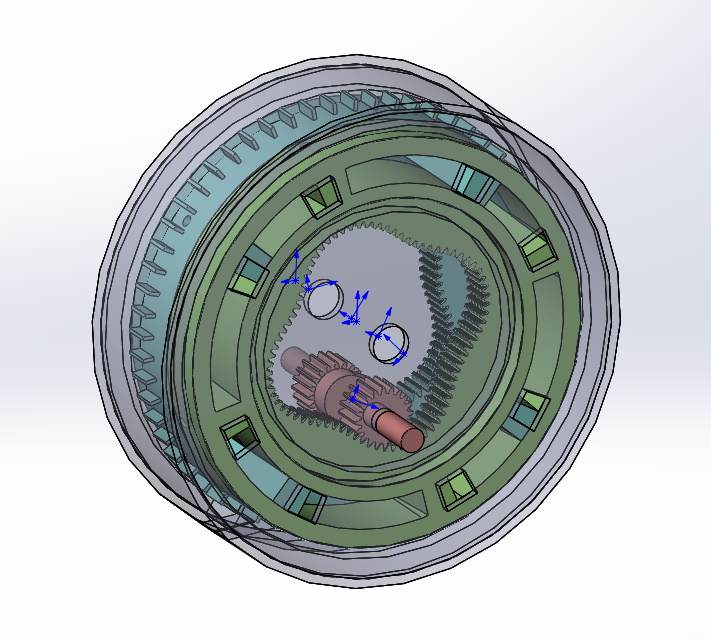
Одно из промежуточных положений роторов.
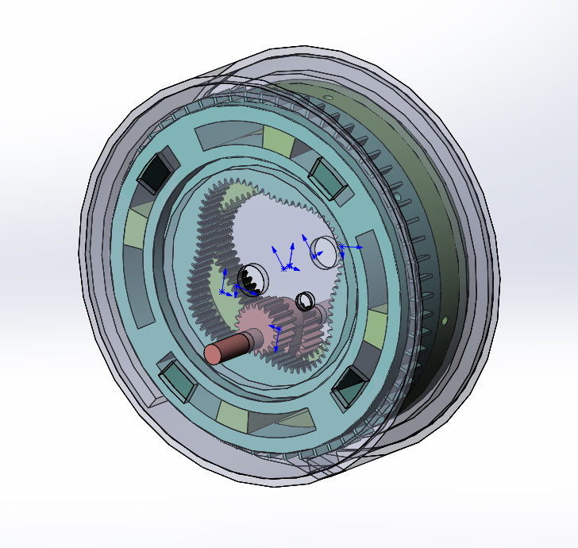
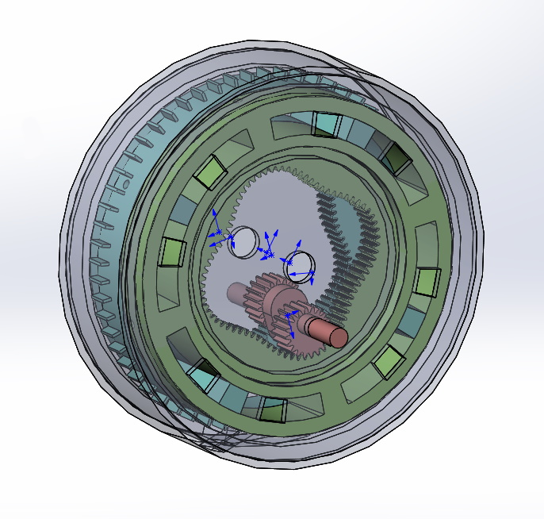
3. Процесс продолжается до начала перекрытия окон торцами лопастей. Все это время подается топливо и происходит горение в камерах сгорания.
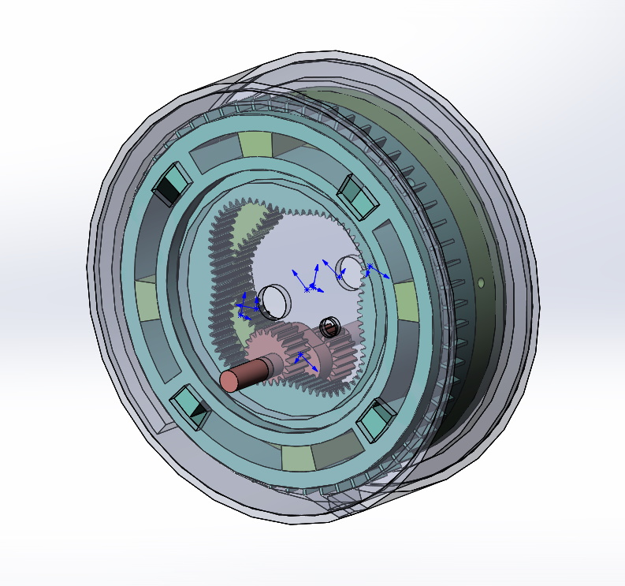
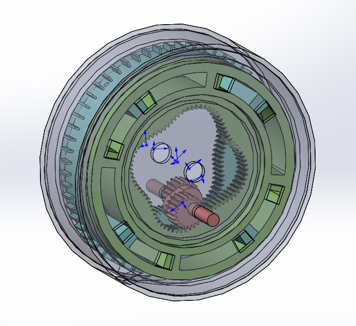
4. Лопасти перекрывают окна и процесс горения прерывается. При дальнейшем вращении роторов цикл повторяется.
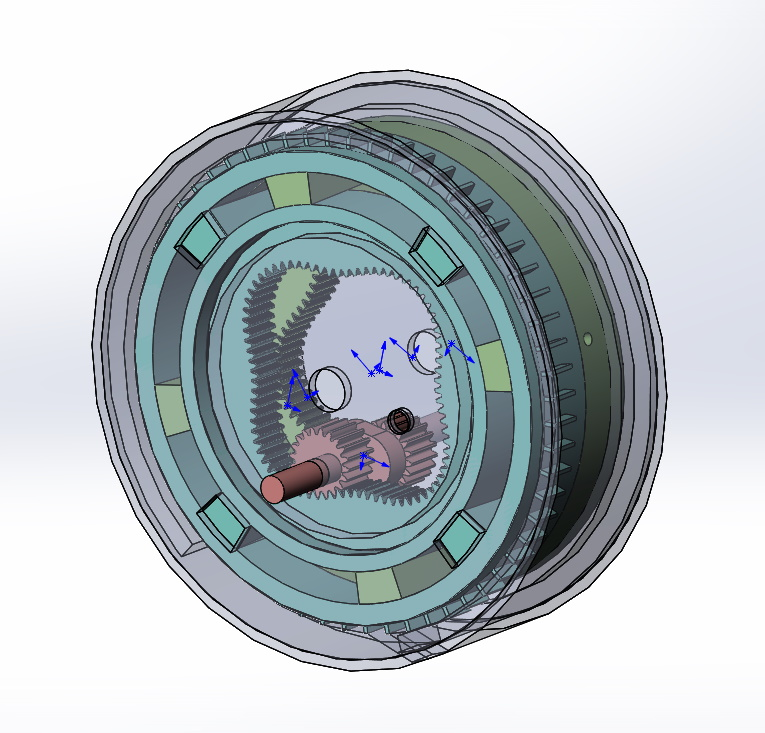
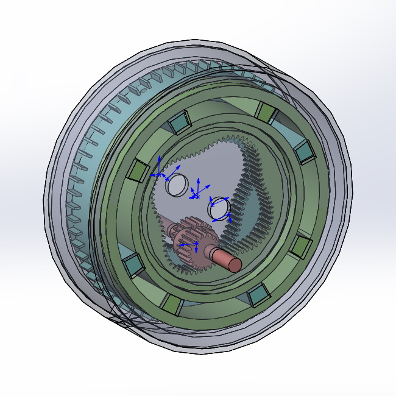
Процесс показан на анимации
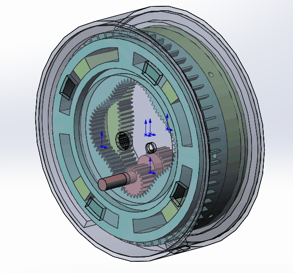
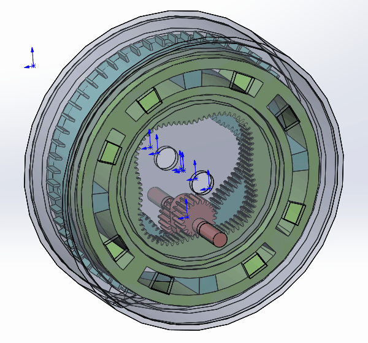
Охлаждение и смазка
Так как оба ротора вращаются можно использовать способ центробежного охлаждения (как и в двухтактных или четырехтактных двигателях). В качестве охлаждающей жидкости можно использовать масло. Для протока жидкости в лопостях выполнены каналы. Сток жидкости собирается корпусом роторов и подается снова для охлаждения (проходя фильтр и радиатор - не показаны). В приведенном примере жидкость подается в пространство между зубчатыми венцами роторов.
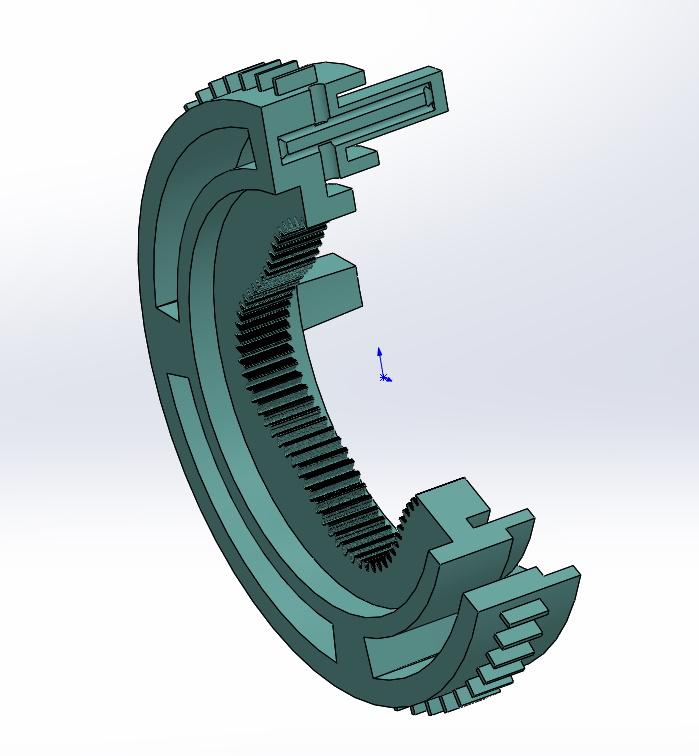
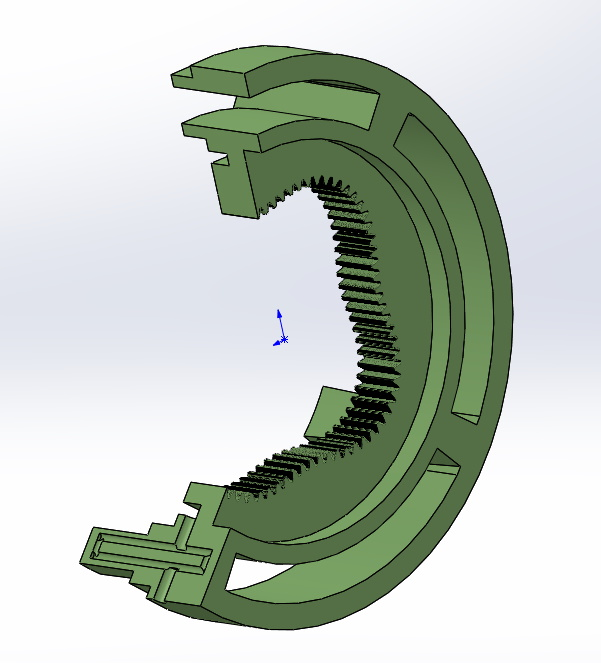
Заключение
Основное приемущество двухроторной конструкции - это отсутсвие лопаток турбины в горячей части. Температура в камерах сгорания реактивных двигателей ограничена жаропрочностью лопаток турбины. Жаропрочность же существующих материалов применяемых для лопаток практически достигла предела. Охлаждение лопаток так же не простая задача. Возможность центробежного охлаждения элементов камер сгорания и отсутсвие нагруженных элементов зависящих от жаропрочности материалов позволяет поднять температуру в камерах сгорания. С повышением температуры газов за камерами сгорания повышается тяга и экономичность двигателя. При прочих равных условиях чем выше перепад температур между рабочим телом и окружающей средой - тем выше КПД тепловой машины. Кроме того, современные материалы лопаток и технологии их обработки очень дорогие. Охлаждаемая конструкция позволит использовать менее жаропрочные материалы (или же конструкционные стали как в обычных ДВС) и тем самым снизить цену двигателя. На всех иллюстрациях выше детали двигателя показаны схематично. Показана принципиальная возможность создания такой машины, работоспособность механизмов и механических передач.